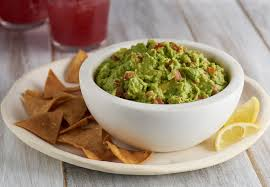

Classic Guacamole

This is a classic, simple guacamole recipe that is always a crowd-pleaser. Perfect for parties, snacks, or as a topping for your favorite Mexican dishes. The key is using fresh, ripe ingredients.
Ingredients
- 3 ripe avocados
- 1/2 cup diced onion
- 1/2 cup chopped cilantro
- 1 lime,juice
- 1 teaspoon of salt
Intructions
- Slice the avocados in half, remove the pit, and scoop the flesh into a mixing bowl.
- Gently mash the avocado with a fork until you reach your desired consistency.
- Add the diced onion, cilantro, lime juice, salt, and minced jalapeño (if using).
- Stir everything together until well combined.
- Taste and adjust seasoning if necessary. Serve immediately.
Recipe by Awesome Back to Homepage